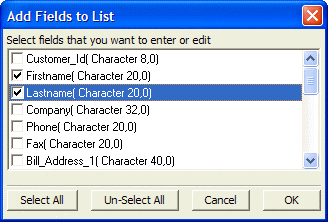

Add Fields to List Dialog Box
Check the boxes to the left of the fields you want to add to the list.
Optionally click Select All to check all check boxes.
Optionally, click Un-Select All to de-select all check boxes.
Click OK to continue or Cancel to discard your selections.
